| 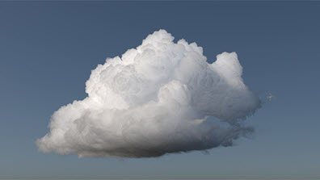 | 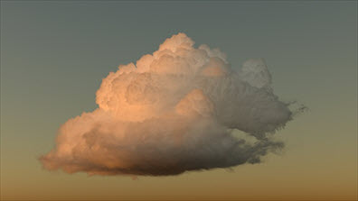 |
本教程提供有关如何渲染 Walt Disney Animation Studios 云数据集的分步说明。下载中包含的 VDB 文件是包含密度数据的非均质体积云模型。我们将使用 Arnold 体积 着色器渲染此 VDB 数据，并使用 standard_volume 着色器对其进行着色。我们将使用连接到 skydome_light 颜色的 physical_sky 为场景照明。
要下载场景文件，请单击此处。
本教程分为以下章节：
README.txt 文件。wdas_cloud_sixteenth.vdb。这是云数据的最低分辨率版本，因此初始加载速度更快（最后我们会将其替换为完全分辨率 VDB 文件）。| 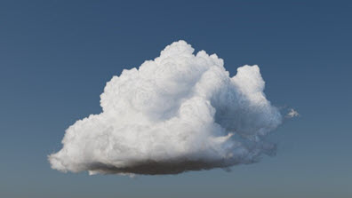 | 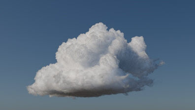 |
| 1 | 20 |
| 仰角：45（默认值） | 仰角：10（日落） |
| 0（默认值） | 10 |
| 25 | 50 |
| 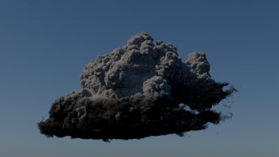 | 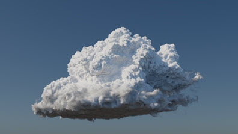 |
| scatter_color：0.5（默认值）。 | 10 |
“散射”(Scatter)滑块最大值应限定为 1。将此值增加到 1 以上只是权宜之计，应谨慎使用。该数字通常应小于 1 以保持能量守恒。
务必将密度添加到 scatter_color_channel。
| 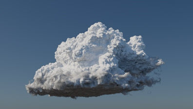 | |
| transparent_depth：1。 | 15。控制 transparent_color 在体积中达到的深度。 |
增加此值可使体积具有更像云的外观。
Transparency_depth 与单位相关。
| 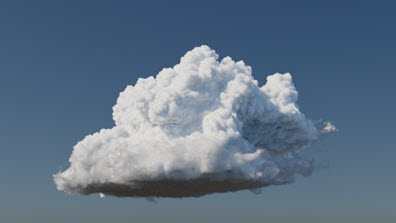 | |
| Transparent_weight：0.368。 | 0.7。增加此值可以更好地控制云体积的密度。 |
| 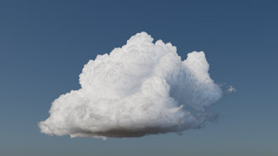 | 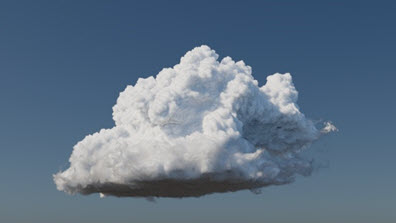 |
| 密度：1。 | 4.3。增加此值可以使云体积具有更厚的外观。 |
| 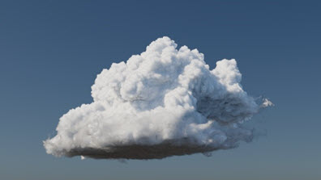 | |
| 各向异性：1（默认值）。 | 0.5（各向异性应高于 0，因为云具有相当强的正向散射性）。 |
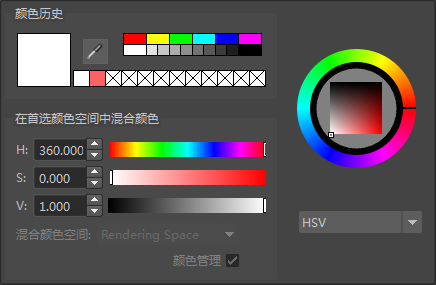
在颜色选择器中，将颜色值增加到 10
对云外观感到满意后，即可进行最终帧渲染。
wdas_cloud_sixteenth.vdb 替换为 wdas_cloud.vdb. 请记住，这是完全分辨率的 VDB 文件，因此渲染时间会更长。| 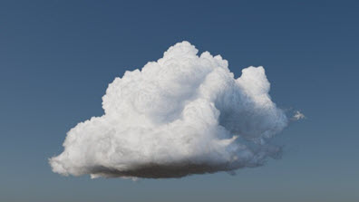 | |
| “wdas_cloud_sixteenth.vdb”。 | “wdas_cloud.vdb” |
| Volume_indirect：2 | 3 |
完成本教程后，请务必从云的思绪中跳出来！
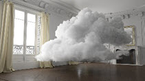
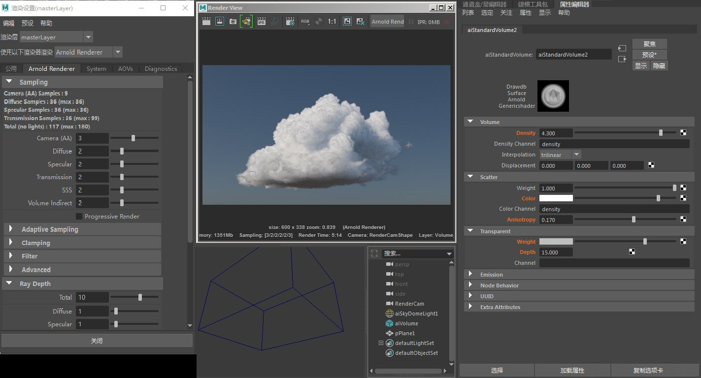
用于此场景的设置